最新动物新闻
过往动物新闻
-
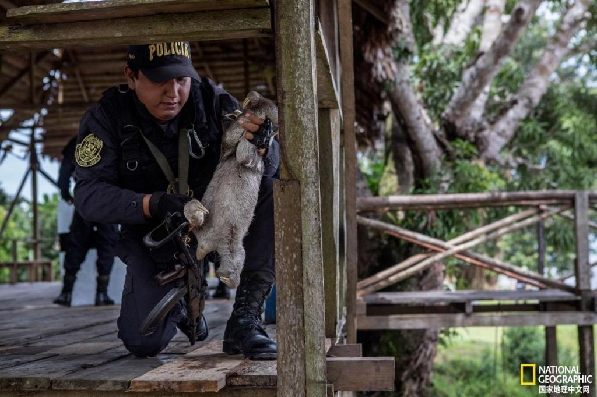
秘鲁解救大量野生动物，动物状态令人心痛
救援人员在秘鲁的阿莱格里亚镇救出了遭非法囚禁的22只野生亚马逊动物，对于这些动物来说可谓是一个圆满的结局。秘鲁的执法机关没收了三只树懒、一只海牛以及一只豪猪，小镇居民将这只箭猪当作吸引游客乘坐游船的诱饵。
2018-12-29 11:18
-
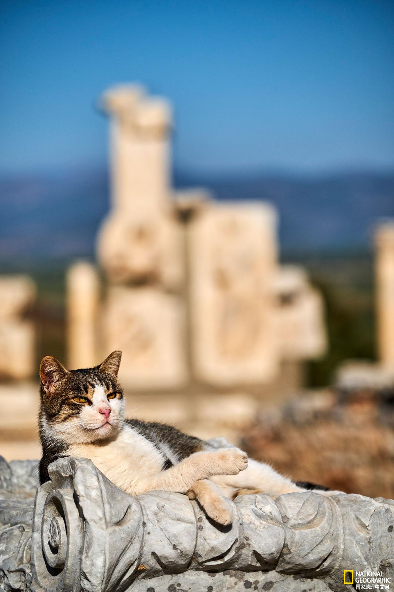
爱猫的你一定要看：世界各地的流浪猫究竟过着什么样的生活
不同城市的猫习惯却差不多，但和人类一样，一些猫更害羞。虽然“野”猫往往害怕人类、和人类保持一定的距离，但没有主人的“街”猫、“流浪”猫和“社区”猫有时却很友好。
2018-12-29 11:12
-
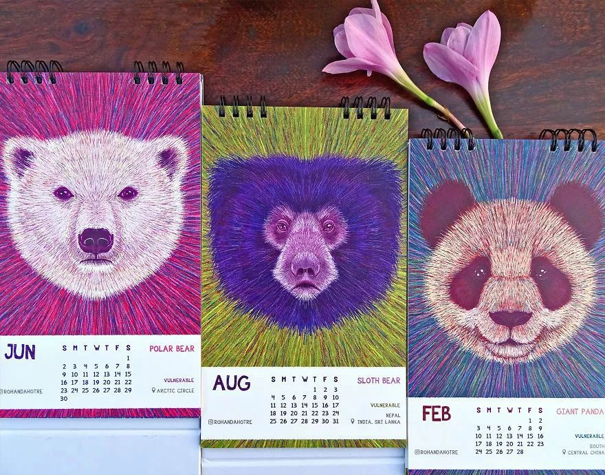
艺术家把濒临灭绝的野生动物画在了日历上，北极熊、大熊猫赫然在列
濒危已然不只是局限在一个国家或地区的现象，而是全球性的。由于栖息地的丧失和遗传变异，加上人类干预等原因，很多野生动物正在濒临灭绝，动物王国正在遭受苦难。
2018-12-28 09:29
-
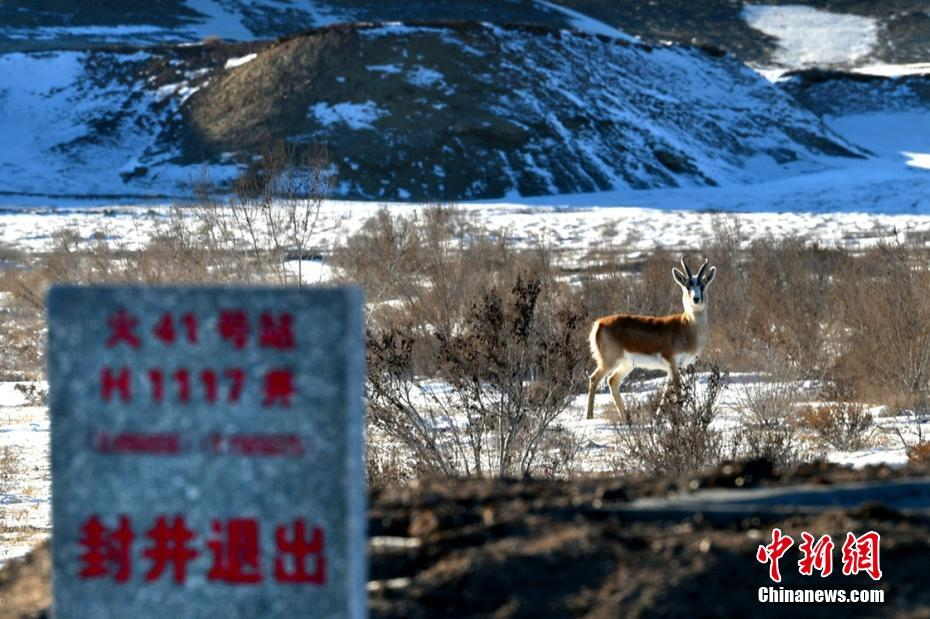
新疆油田公司“封井退出”还野生动物一方“净”土
新疆卡拉麦里山有蹄类野生动物自然保护区（简称卡山保护区），国家重点保护野生动物鹅喉羚在“封井退出”石碑附近优雅地觅食。
2018-12-28 09:26
-
澳动物保护主义者冲进农场带走山羊面临指控
澳大利亚墨尔本东南部，50名动物保护主义者冲进一个家庭农场，强行把3只山羊和一只小羊装车带走，旨在“解除对动物的奴役”，但他们现在面临盗窃和虐待动物的指控。
2018-12-27 10:12
-

主人去世，爱犬随之消失，11年后真相大白：我愿一生孤独，只为爱你如初
这世上最幸福的，其实不是长生不老，权倾朝野，而是有人等，有人爱，有人陪伴终生，爱你如初。
2018-12-26 07:51
-
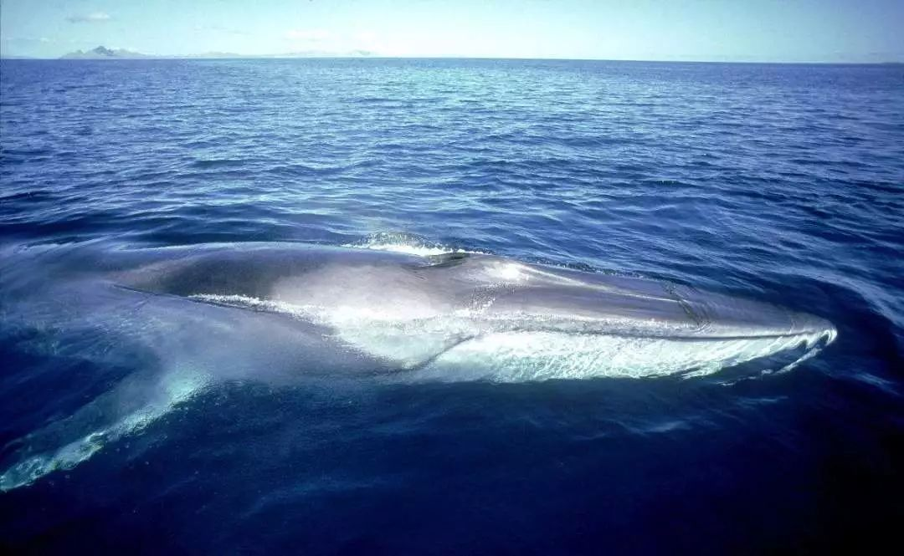
别再吃吃吃、买买买了！“濒危物种红名单”已经够长了！
世界自然保护联盟（IUCN）发布了最新的《濒危物种红色名录》，对全球濒危物种保护状况进行了全面评估。名录共包括96951个物种，其中濒临灭绝的物种达26840个。
2018-12-20 09:34
-
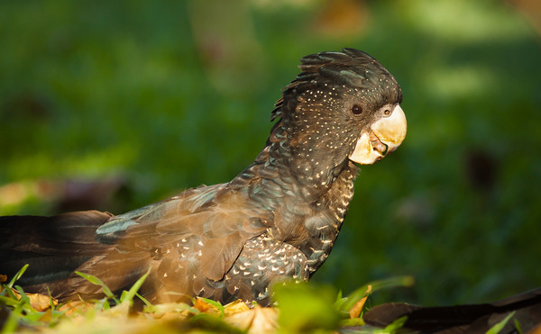
澳洲不顾反对将数百濒危鸟类送往德国“动物园”
澳大利亚政府不顾数个警告和一些重大危险信号，毅然决然的将数百只珍稀和濒危鸟类送往德国一家动物园中。
2018-12-20 09:27
-
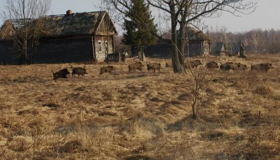
经历了恐怖的核污染，这里竟成了野生动物的“天堂”
这片缺少了人类活动——没有农耕、没有伐木、没有狩猎的土地上，野生动物日趋繁盛，是否向人们道出了一个令人难堪的现状：难道在今天，只有“人类禁区”，才更有可能成为真正的“动物天堂”吗？
2018-12-18 09:59
-
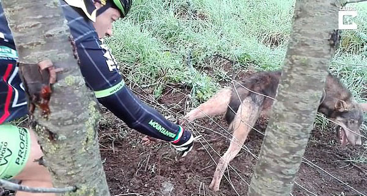
意大利受困野狼被解救时竟反扑咬施救恩人
意大利人卡迈恩·热尔马诺(Carmine Germano)11月7日在罗马省的阿贝托内山(Abetone mountain)骑行时遇到了一只被铁丝困住的野狼。在热尔马诺先生几乎要成功解救它时，这只受惊的狼却试图掉头扑咬营救者。
2018-12-13 10:01
-
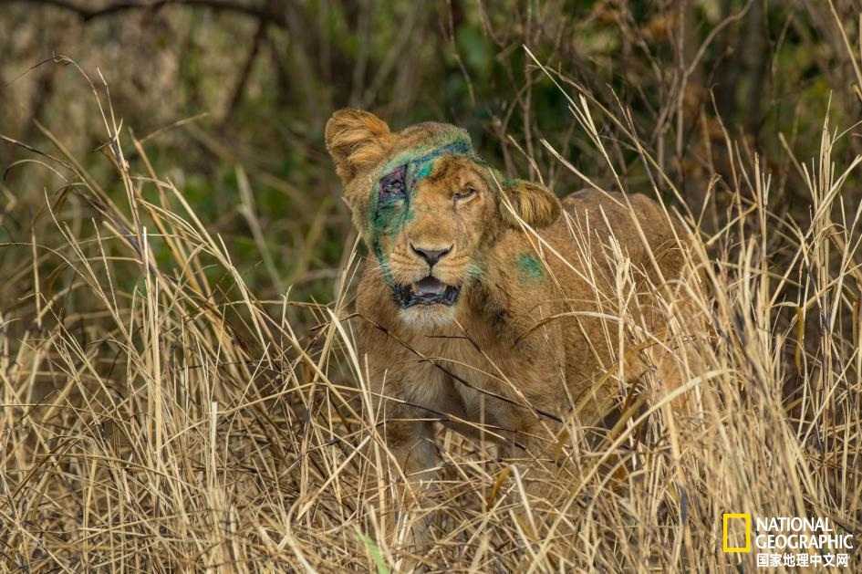
陷阱诱捕已经成为非洲狮的最大威胁
大多数被困陷阱的动物都未能活着生还。这些自制陷阱通常都是用轮胎、自行车、摩托车甚至是野生动物保护栅栏上的金属丝制造而来，旨在诱捕野生动物以获取它们的肉，也就是丛林肉。
2018-12-4 08:24
-
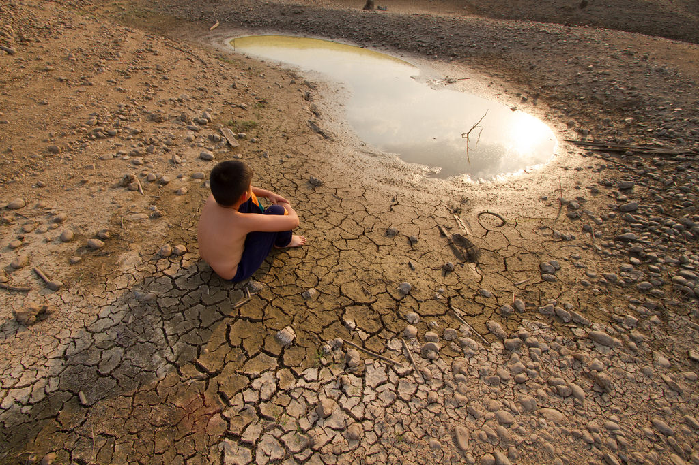
2018地球生命力报告：人类自1970年代消灭60%动物
全球最大的非政府环境保护组织——世界自然基金会(WWF)10月30日发布的《地球生命力报告2018》显示，从1970年到2014年野生动物种群数量消亡了60%。最近数十年，地球物种消失的速度是数百年前的100到1000倍。报告指出，人类活动直接构成了对生物多样性的最大威胁。
2018-11-10 23:05
-
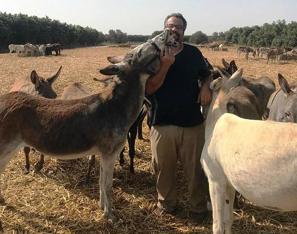
暖心！以色列毛驴见到分别12年饲养员后一眼认出
以色列北部一个动物保护区内，一头获救的毛驴(奇可)在与其饲养员分离长达12年后首次重聚。非常出人意料的是，该毛驴一眼就认出了它昔日的主人——艾萨克(Isaac)，艾萨克熟悉的呼唤声唤起了奇可尘封已久的记忆。
2018-11-1 10:56
-
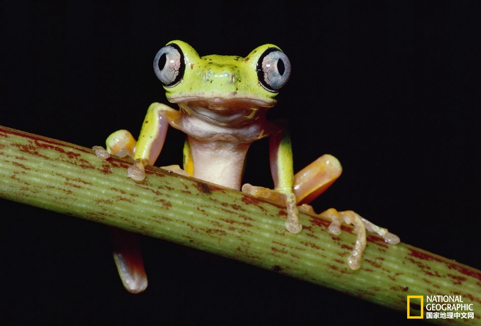
11种即将灭绝的动物，你认识哪些？
说起“濒危物种”，很多时候我们想到的是萌萌的动物，比如憨态可掬的熊猫，或者威风凛凛的老虎。但还有一些不那么广为人知的物种也面临着灭绝的威胁。
2018-10-30 20:10
-
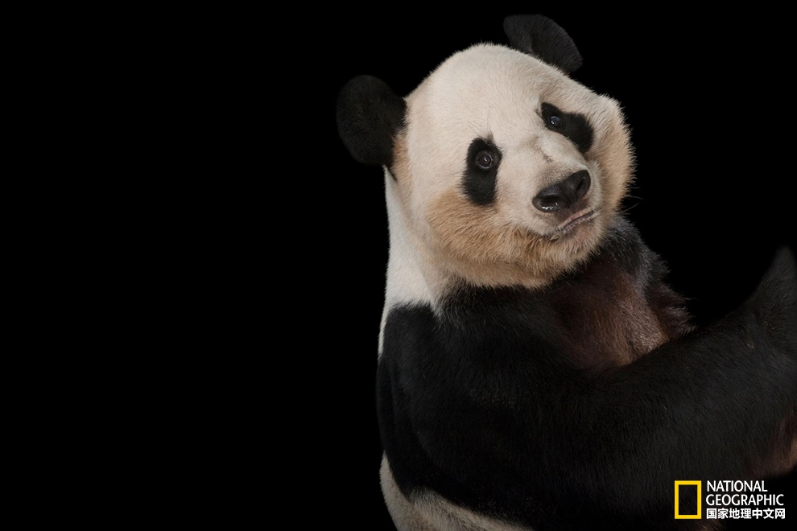
振奋人心——12种绝处逢生的珍奇动物
人类导致的其它物种的灭绝速度达到了新的高度。科学家估计，如今每天有150-200种植物和动物灭绝，其中大多数都未被察觉。按照目前这个速度，到2100年地球上超过一半的物种可能会消失。
2018-10-28 14:54
-
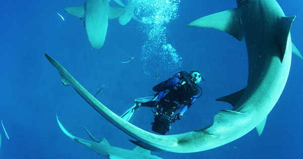
《鲨鱼海洋的灭绝》，一位海洋动物保护者和他的遗作
在正在举办的2018年多伦多国际电影节中，一部特别的纪录片吸引了人们的关注。这便是聚焦鲨鱼保护主题的“Shark Water Extinction”（《鲨鱼海洋的灭绝》，暂译名），影片以冷静的拍摄手法展示了本该是海洋霸主的鲨鱼，在人类社会却濒临灭绝的困境，特别是游走在各国法律边缘的捕鲨行业以及背后的种种政治腐败。
2018-9-18 12:13
-
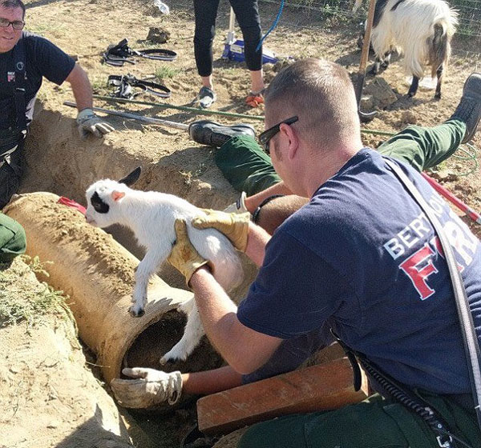
美国一羊羔不幸陷进管道 消防人员暖心救援
美国科罗拉多州伯特鲁德的农场里，一只名叫温斯顿的小羊羔掉进灌溉管道里整整一天被发现。消防部门随后派出人员到现场实施救援，小羊被安全救出。消防人员说：“在每天都要面对危机事件的消防世界里，温暖人心的时刻总是令人耳目一新。我们很高兴看到小山羊温斯顿快乐地成长，并毫发无损地在管道里完成了这次冒险。”
2018-9-12 08:55
-
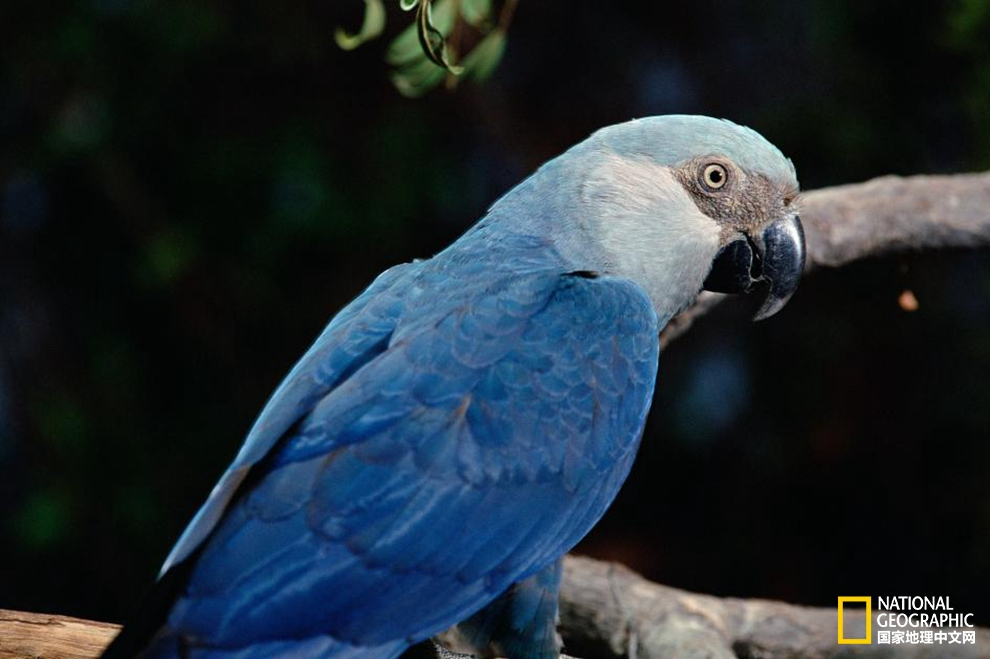
生灵的逝去：近十年消逝的那些鸟类
当一个物种的数量减少到极低程度时，它们的复兴之路就变得极为艰难，人们只能眼睁睁地看着它们灭亡。
2018-9-10 15:13